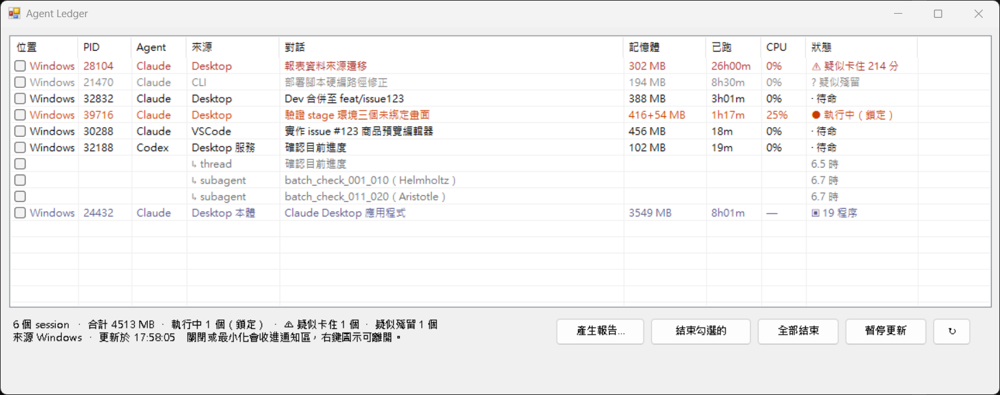

案例 · 四個現場
我處理的，是系統與人之間的落差。
從平台轉型、政府標案、SaaS 上線到第一線支援，我先看清楚現場，再決定產品怎麼做。每個案例都寫了情境、我做的事、結果，以及可以核對的證據。
情境
公司過去二十年是「一案一站」：每個客戶網站是獨立專案、各自維護，需求到上線大約 30 天，維護成本隨站數線性成長。團隊用訊息和口頭追需求，沒有統一的 Issue 與發版紀錄；同時要配合 ISO 27001 的文件與稽核要求。
我做的
- 定義平台範圍。把各站的客製需求盤點成可設定的功能（版型、Widget、多語系、金流物流、多規格庫存），能用設定解決的就不寫客製；主題樣式改成公版＋客戶覆寫層，客戶可貼自己的 CSS 而不影響其他租戶。
- 建立交付流程。從訊息追需求改成 GitHub Projects：9 種 Issue 表單、PR 模板、ChangeLog 規範、「階段 × 狀態」雙欄位看板（feature → dev → release → official），每張票在哪一眼可見。
- 把規格文件化。導入 OpenSpec，累積 104 個能力規格；PR 審查要求規格的每個核取項目對到具體測試。
- 設計 AI 開發制度。CLAUDE.md 憲章、docs/rules、skills（/issue-start、/commit、/pr-review、/diagnose）、驗收員與對抗審查員 agent、verify-gate hook——讓實作與審查可以大量交給 AI，但「什麼算做完」由制度與證據決定。詳見 AI 工作方式。
- 自己動手診斷。用 Search Console 分析新舊站索引問題、robots 與 sitemap；量測商品頁 TTFB 1.5–3 秒 vs. 列表 0.4–0.7 秒，找出根因是相關商品無上限查詢＋重複渲染 466 張卡片（748 KB HTML），寫成有數據的 Issue 而不是直接改碼。
- 親手驗收。用瀏覽器實測每一批票（購物車、物流、金流回呼、會員驗證、多規格編輯），正式站只建可辨識、可回復的測試訂單，卡關的票直接在 Issue 留言寫清楚環境、觀察值與解除條件。
結果
- 12 個客戶網站整併到同一套平台；需求到上線從約 30 天縮短到 7 天左右；新客戶開站時間少一半以上。
- 內部回報與客服工單減少約 70%。
- 需求、Bug、發版全部進 GitHub：六個月內我在這個倉庫開立與驗收的票超過 100 張，PR 審查有紀錄、可追溯。
情境
供應商在 LINE 裡開賣場、商家在 LINE 裡訂貨。使用者不是工程師，多數在手機上操作：加好友、綁定通知、下單、砍價改單、簽收。任何一步卡住，他們不會回報，只會不用。
我做的
- 把「第一次使用也走得完」寫成規則。前台禁工程術語、禁 emoji、禁原生 alert／confirm、手機禁橫向捲動、主按鈕樣式統一、清單採「列＋側欄」——80 多條記憶規範，AI 實作時自動遵守，不用每次講。
- 先驗再發。每個新功能（階梯價、合作邀請、通知中心、簽收流程）先用瀏覽器在本機或測試站實際下單、逐一觸發 LINE 通知檢查 Flex Message、切 5 種螢幕寬度，通過才發版；發版後等 workflow 完成，驗 health endpoint 與實際路徑（例如未登入深連結是否正確導到登入再回到目標對話框）。
- 把摩擦點變成票。綁定通知流程卡在連動畫面、供應商不知道 rich menu 要貼什麼連結、商家查看賣場 404——我自己操作發現，開票、驗收、結案；能整批處理的就整批派（#139–#162 一次交付）。
- 教學影片自動化。做了 tutorial-recorder：用腳本操作系統、產生旁白與字幕、重點推近，一行指令產出 mp4 ＋ srt；功能改版重錄也是同一行指令。
- 上線前清單。舊站轉換的上線前必修清單、網址交換計畫、正式環境唯讀盤點，全部寫成文件進倉庫，讓下一個 session（或下一個人）照著做。
結果
- 重整 8 個設定分頁與 20 處欄位提示，跨 5 種畫面寬度驗收，檢查 7 條資料深連結並維持租戶隔離。
- 核心模組 M1–M4、M9–M11 完成，M5／M6／M7 與上線工作進行中；供應商邀請深連結、LIFF 入口修正等已發到測試站並驗證。
可以核對的證據
- 教學影片自動錄製工具的 README 與腳本結構（可要求展示）。
- 我下給 AI 的批次指令與驗收指令原文：指令節錄。
情境
接手既有服務：舊功能要穩、新功能要進、每季要向機關簡報、要配合弱點掃描與 App 檢測。其中一項是把節目表資料介接從人工作業改成 CSV 透過雲端儲存自動同步，牽涉機關資訊部門、內部工程師與報價。
我做的
- 先弄清楚狀況再開會。開會前把所有節目表相關 Issue（含已關閉）盤點成現況摘要；用錄音轉文字整理客戶會議，把口頭需求對回文件。
- 寫規格與報價。節目表資料介接（CSV）規格說明書 v1.0、報價單與報價異動說明、需求與驗收對照表；把內部監控（Discord 通知）與客戶通知（Email）拆成兩張票，各自驗收。
- 把測試情境列完整。從一份範本 CSV 產出 37 個測試案例：正常、相容、覆蓋、缺漏、無效、空檔、檔名與邊界，逐案記錄同步結果、前台顯示與通知。
- 失敗也要看得懂。客戶收到的失敗通知必須說明：哪個檔案、何時、哪裡失敗、既有資料是否變動、下一步做什麼；例外堆疊留在伺服器日誌。
- 維運自動化。建每日 automation 檢查首頁是否正常、是否出現錯誤殼頁；協調弱點掃描、App 檢測與稽核文件的交付。
結果
- 既有服務維持穩定，新功能持續上線；每季簡報有營運與流量數據可講。
- 節目表介接從「口頭需求」變成有規格、有報價、有 37 個測試案例的可驗收交付。
情境
藥局的系統問題不會在辦公室發生。ERP 升級、健保申報卡住、主機或網路壞掉，都在櫃檯旁邊、病人排隊的時候發生。使用者要的不是解釋，是現在能用。
我做的
- 每月實地跑近百家藥局：系統導入、教育訓練、健保申報問題；主機、網路、設備故障到現場排除，常帶著備品直接換。
- 把客戶語言翻成工程問題：哪些是操作、哪些是設定、哪些真的是 bug，回報時附重現步驟。
- 串接網路商城的自動訂單，把人工轉單改成系統自動跑，訂單處理效率提升約 75%。
- 之後以外部顧問身分，幫一家藥局系統軟體公司建立專案管理制度、導入 Gitflow，把作業流程整理成符合 ISO 27001 的樣子。
這段為什麼重要
現在我做產品時的直覺——先看使用者卡在哪、驗收要自己走一遍、失敗訊息要讓人知道下一步——都是這段養成的。我不是猜使用者怎麼工作，是真的站在旁邊看過。
可以直接打開的東西。
工作之外，用同一套方法做自己的工具。共同點：有 README、有測試或資料規則、有明確的「不做什麼」。
agent-ledger
GitHub ↗管理本機所有 AI coding agent 的 session：即時看哪些在跑、對應哪個對話、吃多少記憶體，安全結束不需要的；指定期間把散落各處的對話歸納成任務，附 token 用量，產出可以直接交出去的工作報告。支援 Claude Code／Codex／Gemini CLI，Windows 原生與 WSL。
WHY不同 agent 願意公開的資訊差很多。README 最重要的一節是「支援程度」表：哪個 agent 能精確對到 PID、哪個只能整個結束——動手前先看懂，才不會砍掉正在跑的任務。
- Python
- CLI + Windows GUI
- 卡住偵測
- 週報

bopomofo-rescue
GitHub ↗忘記切輸入法打出的注音亂碼自動還原成中文的 Claude Code skill：這個 PR dk3u3 merge 了嗎 → 可以。送出訊息當下由 hook 解碼，零指令。
WHY詞典分詞負責把音還原對，選字交給有上下文的 AI（部屬→部署）。72 個測試裡 27 個防誤判。
- Agent skill
- UserPromptSubmit hook
- libtabe 詞頻
書記官法科研習室
網站 ↗司法特考四等法院書記官考古題：9 科、1,090 題官方試題、850 題逐題解析、模擬考、錯題本、間隔複習、法條速查、申論考點總覽；PWA 離線可用。
WHY解析採「爭點、法律規則、套入本題、結論」；每題可一鍵回報勘誤；申論考點在真人審稿前一律標 draft。
- Next.js
- PWA
- 考選部 PDF 匯入器
iPAS AI 應用規劃師刷題
網站 ↗初級與中級 12 份官方試卷共 600 題，逐頁對照官方 PDF，每題可追溯來源與頁碼；600 題 A–D 選項解析初稿。
WHY兩階段交付：先把全部題目匯入並核對答案，才開始批次詳解。AI 獨立複核以 10 題為一批留紀錄，永遠不會被標成人工複核。
- Next.js
- 來源清冊
- 複核狀態機
GitHub 交付範本（繁中）
GitHub ↗9 種 Issue 表單（錯誤、功能新增、功能修改、任務、樣式、技術調研、文件、提問、線上事故）、PR 模板、Labels 初始化腳本、Projects 與自動化教學。
WHYStatus、Priority、Iteration 放 Projects 欄位，不用 Labels 重複維護，避免同一狀態出現兩份資料。
- Issue Forms
- Projects
- Template repo
軟體菜鳥 PM 的生存日記
Threads ↗寫 AI 協作（我怎麼交代任務給 agent、AI 審查的隱形成本、一個案子從一年變三個月）、政府標案、需求釐清與轉職。近 30 天約 10 萬次瀏覽、近 700 位追蹤。
WHY經營方法跟做產品一樣：親自登入後台讀數據、每篇記錄瀏覽與回覆、用數據修正開頭型別，而不是憑感覺。
- 寫作
- Build in public
- 數據驅動